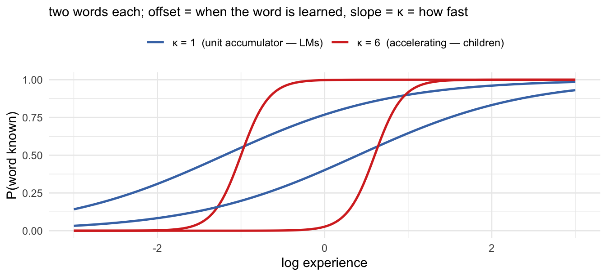
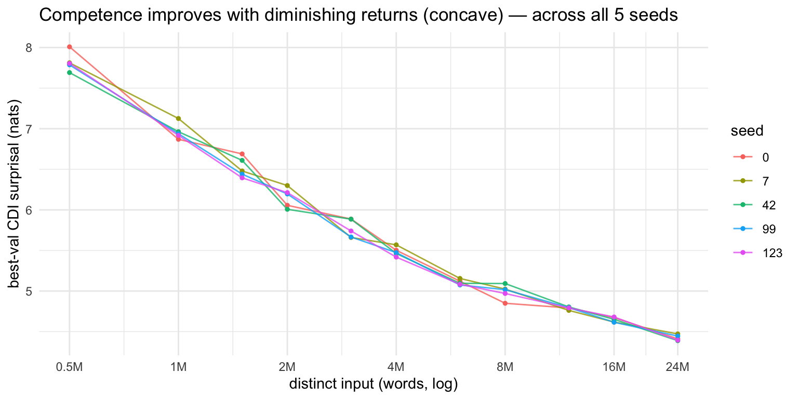
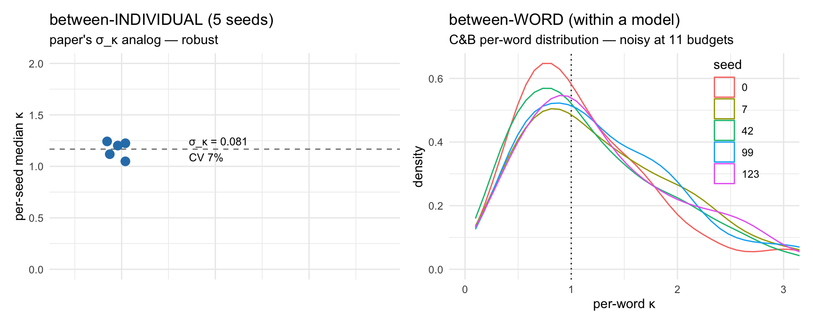

Code
knitr::opts_knit$set(root.dir = here::here()) # resolve data paths from repo root
library(dplyr); library(readr); library(tidyr); library(ggplot2); library(purrr)GPT-2 vs children on a development-matched axis
knitr::opts_knit$set(root.dir = here::here()) # resolve data paths from repo root
library(dplyr); library(readr); library(tidyr); library(ggplot2); library(purrr)A walkthrough of the LLM side of the paper. The paper’s two headline signatures of children’s vocabulary growth are efficiency (the intercept ξ_i — overall learning rate) and acceleration (the slope κ_i — how fast learning speeds up with experience), with between-child variability a secondary signature. The model is M4: \(\theta_i(t) = \xi_i + \kappa_i \log(t/a_0)\), and κ = 1 is the “unit accumulator” (no acceleration); children sit at κ_pop ≈ 10 (strong acceleration).
The LLM section’s claim (paper §“Large language models do not show acceleration”) is the acceleration disanalogy: GPT-2 — even trained on child-directed speech — behaves as a pure accumulator (κ ≈ 1), with very limited variability. This notebook documents the experiments behind that claim, the statistic each uses, and how each maps to the paper. Narrative log: journal/experiments_llm.md.
Read §1 first — it is the linking hypothesis: why an LM’s per-word learning curve has a slope we can identify with the model’s κ. This is the non-obvious step the whole comparison rests on.
| experiment | statistic | “experience” axis | answers | |
|---|---|---|---|---|
| L1 | CHILDES-trained GPT-2, 3 seeds (vs BookCorpus) | C&B per-word slope | training steps (within run) | input distribution ≠ the gap |
| L2 | data-variance pilot, 2 disjoint 10M chunks | C&B per-word slope | training steps | data identity ≈ no variance |
| L3 | developmental ladder, 1 seed × 6 budgets | best-val competence | distinct input (across runs) | (pilot for L4) |
| L4 | developmental ladder, 5 seeds × 11 budgets | C&B per-word slope on the budget axis + aggregate | distinct input | acceleration (κ≈1), + variability, shape |
| L5 | disjoint-halves control, 2 pools × 3 seeds | aggregate developmental slope | distinct input | convergence ≠ overlap artifact |
This is the conceptual move the whole comparison depends on, so it’s worth being explicit. It has two steps: (a) why, in our model, a per-word learning curve has slope κ; and (b) why we can read the same quantity off a language model.
In the model, a child’s latent ability accumulates with experience as \[\theta_i(t) = \xi_i + \kappa_i \,\log(t/a_0),\] and each word j is produced with a Rasch/IRT probability that compares ability to the word’s difficulty \(\delta_j\): \[P(\text{produce } j \mid i, t) = \operatorname{logistic}\big(\theta_i(t) - \delta_j\big) = \operatorname{logistic}\big(\underbrace{\kappa_i}_{\text{slope}}\log(t/a_0) + \underbrace{(\xi_i - \delta_j)}_{\text{offset}}\big).\]
So for any single word, \(P(\text{known})\) traces a logistic (sigmoid) in log-experience. The word’s difficulty \(\delta_j\) and the child’s efficiency \(\xi_i\) only set the offset — when the word crosses 50% (its midpoint). The slope of that sigmoid on the log-experience axis is κ_i — the acceleration, shared across all of a child’s words.
That gives the boundary that organizes everything:
We can’t see an LM’s latent θ, but we can see its competence on each word as a function of experience: the (negative) surprisal it assigns, which maps monotonically to a probability. Chang & Bergen fit, per word, the same 4-parameter logistic to (mean surprisal) vs log-experience: \[S_w(x) = \text{lower}_w + \frac{\text{upper}_w - \text{lower}_w}{1 + \exp((x - \text{mid}_w)/\text{scale}_w)},
\qquad \text{slope} = 0.434 / \text{scale}_w\] (0.434 = \(\log_{10}e\), converting the per-log10 slope to logit-per-natural-log). The linking hypothesis is that this per-word slope is the LM’s κ — logits of competence gained per log-unit of experience, in the same units as a child’s κ_i. Under it, a slope of 1 means the LM is a pure unit accumulator; a slope of 10 would mean it accelerates like a child. Implementation: fit_per_word_sigmoid.py; C&B filters 0.01 < scale < 10, (upper − lower) > 1 nat.
x <- seq(-3, 3, length.out = 200)
sig <- function(x, kappa, mid) plogis(kappa * (x - mid))
df <- bind_rows(
tibble(x, p = sig(x, 1, -1.2), kappa = "κ = 1 (unit accumulator — LMs)", word = "w1"),
tibble(x, p = sig(x, 1, 0.4), kappa = "κ = 1 (unit accumulator — LMs)", word = "w2"),
tibble(x, p = sig(x, 6, -1.0), kappa = "κ = 6 (accelerating — children)", word = "w1"),
tibble(x, p = sig(x, 6, 0.6), kappa = "κ = 6 (accelerating — children)", word = "w2"))
ggplot(df, aes(x, p, group = interaction(kappa, word), color = kappa)) +
geom_line(linewidth = 0.9) +
scale_color_manual(values = c("κ = 1 (unit accumulator — LMs)" = "#4575b4",
"κ = 6 (accelerating — children)" = "#d73027")) +
labs(x = "log experience", y = "P(word known)", color = NULL,
subtitle = "two words each; offset = when the word is learned, slope = κ = how fast") +
theme_minimal(base_size = 11) + theme(legend.position = "top")
log10(steps) within one run. Over 20 epochs the model re-sees the same corpus, so this mixes optimization convergence with data scaling — not strictly development.log10(words) across separately-converged models. The development-matched axis.kid <- tibble(kappa_pop = 10.3, sigma_kappa = 3.5) # English M_best (SM2 fits): median kappa_i, between-child SDRetrained GPT-2-small on CHILDES (Feng et al. spec, 3 seeds) and refit the C&B per-word sigmoid on the training-step axis, vs Chang & Bergen’s BookCorpus/WikiText LMs. Claim tested: is the kid-vs-LM gap an input-distribution artifact (adult text vs child-directed speech)?
# C&B filters: meaningful transition only (0.01 < scale < 10, surprisal range > 1)
load_sig <- function(path, label) {
read_tsv(path, show_col_types = FALSE) |>
transmute(model = label, scale = ParamScale, slope = 0.434/ParamScale,
rng = ParamUpper - ParamLower) |>
filter(is.finite(slope), scale > 0.01, scale < 10, rng > 1)
}
childes <- map_dfr(c(42,0,123), ~load_sig(
sprintf("fits/llm/sigmoids/gpt2_childes_seed%d_sigmoids.txt", .x), sprintf("CHILDES seed %d", .x)))
book <- map_dfr(c("bert","gpt2","bilstm","lstm"), ~load_sig(
sprintf("data/chang_bergen_2022/%s_sigmoids.txt", .x), sprintf("BookCorpus %s", .x)))
bind_rows(childes, book) |> group_by(model) |>
summarise(n = n(), median_slope = round(median(slope),3),
iqr = sprintf("[%.2f, %.2f]", quantile(slope,.25), quantile(slope,.75)), .groups="drop") |>
arrange(median_slope)| model | n | median_slope | iqr |
|---|---|---|---|
| CHILDES seed 0 | 609 | 0.723 | [0.45, 1.14] |
| CHILDES seed 123 | 609 | 0.735 | [0.45, 1.16] |
| CHILDES seed 42 | 609 | 0.740 | [0.43, 1.11] |
| BookCorpus bert | 609 | 0.759 | [0.62, 0.92] |
| BookCorpus gpt2 | 604 | 0.810 | [0.66, 1.01] |
| BookCorpus bilstm | 604 | 0.866 | [0.74, 1.06] |
| BookCorpus lstm | 593 | 0.960 | [0.72, 1.23] |
Result. CHILDES-trained seeds cluster at 0.72–0.74, inside the BookCorpus cluster (0.76–0.96) — all ~14× below children (κ ≈ 10). CDS-matched training does not move the slope: input distribution explains ≈ 0 of the gap. (Also note the tight 3-seed agreement — first hint that LM between-instance variance is ~0; σ across seed medians ≈ 0.01.)
This is the training-step axis — the slope is partly an optimization-rate, not a pure developmental rate. L4 redoes it on the distinct-input axis and the conclusion survives. The C&B figure in the deck (chang_bergen_slope_summary.csv) is this analysis.
Two GPT-2-small on two disjoint 10M-word CHILDES chunks, same seed/tokenizer/ eval. Claim tested: does the identity of the training data create between-instance variance? (Gates whether we need many disjoint corpora.)
chunkAB <- map_dfr(c("A","B"), ~{
read_tsv(sprintf("fits/llm/sigmoids/gpt2_childes_chunk%s_seed42_sigmoids.txt", .x), show_col_types = FALSE) |>
transmute(chunk = .x, Token, scale = ParamScale, slope = 0.434/ParamScale, rng = ParamUpper-ParamLower) |>
filter(is.finite(slope), scale > 0.01, scale < 10, rng > 1)
})
paired <- chunkAB |> select(chunk, Token, slope) |>
pivot_wider(names_from = chunk, values_from = slope) |> filter(!is.na(A), !is.na(B))
tibble(
pearson = round(cor(paired$A, paired$B), 3),
spearman = round(cor(paired$A, paired$B, method = "spearman"), 3),
median_A = round(median(paired$A), 3), median_B = round(median(paired$B), 3),
paired_median_diff = round(median(paired$A - paired$B), 3))| pearson | spearman | median_A | median_B | paired_median_diff |
|---|---|---|---|---|
| 0.759 | 0.88 | 0.643 | 0.57 | 0.013 |
Result. Per-word slopes across disjoint data correlate Pearson 0.76 / Spearman 0.88; the per-LM summary shifts only ~0.01–0.07 vs children’s σ_κ ≈ 3.5. Data identity is a negligible variance source. (Same C&B statistic, training axis. Full write-up + figure: pilot_data_variance_plot.R.)
5 seeds × 11 nested budgets (0.5M…24M words), each trained to best-val convergence; competence = held-out CDI surprisal at the best-val model. Each seed = an “individual” (its own init + input stream). This is the distinct-input axis. Both the aggregate developmental slope and the per-word C&B sigmoid on the budget axis are computed here.
d <- read_csv("fits/llm/ladder_bestval.csv", show_col_types = FALSE) |>
mutate(surprisal = as.numeric(surprisal), lnw = log(words), l10w = log10(words))
agg <- d |> group_by(seed, words, lnw) |> summarise(m = mean(surprisal), .groups="drop")ggplot(agg, aes(words, m, color = factor(seed))) +
geom_line(alpha=.8) + geom_point(size=1) +
scale_x_log10(breaks=c(.5,1,2,4,8,16,24)*1e6, labels=c("0.5M","1M","2M","4M","8M","16M","24M")) +
labs(x="distinct input (words, log)", y="best-val CDI surprisal (nats)", color="seed",
title="Competence improves with diminishing returns (concave) — across all 5 seeds") +
theme_minimal()
Surprisal 7.8 → 4.6 nats, concave in log-input (Δ per e-fold shrinks): the neural scaling-law shape. Children accelerate (super-linear vocab growth). Same competence axis, opposite curvature.
The C&B 4-PL, now fit per word to competence vs log10(budget) across the 11 converged models (this is ladder_analysis_final.R):
four_pl <- function(x, y) tryCatch({
f <- nls(y ~ lo + (up-lo)/(1+exp((x-mid)/sc)),
start=list(up=max(y), lo=min(y), mid=mean(x), sc=0.5),
lower=c(up=min(y)-5, lo=min(y)-5, mid=min(x)-3, sc=1e-3),
upper=c(up=max(y)+5, lo=max(y)+5, mid=max(x)+3, sc=50),
algorithm="port", control=nls.control(maxiter=200, warnOnly=TRUE))
tibble(sc = unname(coef(f)["sc"]), rng = unname(coef(f)["up"]-coef(f)["lo"]))
}, error=function(e) tibble(sc=NA_real_, rng=NA_real_))
pw <- d |> group_by(seed, word) |> filter(n()==11) |>
group_modify(~four_pl(.x$l10w, .x$surprisal)) |> ungroup() |>
mutate(kappa = 0.434/sc) |> filter(sc>0.01, sc<10, rng>1)
kpseed <- pw |> group_by(seed) |> summarise(kappa_med = median(kappa), .groups="drop")
tibble(kappa_pop_LM = round(mean(kpseed$kappa_med),3),
sigma_kappa_LM = round(sd(kpseed$kappa_med),4),
CV_pct = round(100*sd(kpseed$kappa_med)/mean(kpseed$kappa_med),1),
kids_kappa = 10.3, kids_sigma = 3.5, kids_CV_pct = 34)| kappa_pop_LM | sigma_kappa_LM | CV_pct | kids_kappa | kids_sigma | kids_CV_pct |
|---|---|---|---|---|---|
| 1.167 | 0.0815 | 7 | 10.3 | 3.5 | 34 |
κ_dev ≈ 1.17 (per-seed medians 1.05–1.24) — matches the training-axis ~0.74 ballpark, ~9× below children. The shallow slope is not an axis artifact.
The five individuals’ per-word κ medians span 1.05–1.24: σ_κ ≈ 0.08, CV 7%, vs children’s σ_κ ≈ 3.5 / CV ≈ 34%. And the seeds converge with input — between-seed competence SD shrinks 0.12 → 0.03 nats (0.5M → 16M), the opposite of children’s age-divergence.
agg |> group_by(words) |> summarise(between_seed_sd = round(sd(m),3), .groups="drop")| words | between_seed_sd |
|---|---|
| 5.0e+05 | 0.116 |
| 1.0e+06 | 0.097 |
| 1.5e+06 | 0.123 |
| 2.0e+06 | 0.120 |
| 3.0e+06 | 0.113 |
| 4.0e+06 | 0.056 |
| 6.0e+06 | 0.033 |
| 8.0e+06 | 0.090 |
| 1.2e+07 | 0.016 |
| 1.6e+07 | 0.030 |
| 2.4e+07 | 0.035 |
Two different “variabilities” live here — and they are firmed up by different runs. This is the figure to look at when deciding on a new run:
library(patchwork)
pA <- ggplot(kpseed, aes(1, kappa_med)) +
geom_hline(yintercept = mean(kpseed$kappa_med), linetype = "dashed", color = "grey50") +
geom_jitter(width = .04, height = 0, size = 3, color = "#2c7fb8") +
annotate("text", x = 1.18, y = mean(kpseed$kappa_med),
label = sprintf("σ_κ = %.3f\nCV %.0f%%", sd(kpseed$kappa_med),
100*sd(kpseed$kappa_med)/mean(kpseed$kappa_med)), hjust = 0, size = 3.1) +
coord_cartesian(xlim = c(.85, 1.7), ylim = c(0, 2)) +
labs(title = "between-INDIVIDUAL (5 seeds)", subtitle = "paper's σ_κ analog — robust",
x = NULL, y = "per-seed median κ") +
theme_minimal(base_size = 10.5) + theme(axis.text.x = element_blank(), axis.ticks.x = element_blank())
pB <- ggplot(pw, aes(kappa, color = factor(seed))) +
geom_vline(xintercept = 1, linetype = "dotted") +
geom_density() + coord_cartesian(xlim = c(0, 3)) +
labs(title = "between-WORD (within a model)", subtitle = "C&B per-word distribution — noisy at 11 budgets",
x = "per-word κ", y = "density", color = "seed") +
theme_minimal(base_size = 10.5) + theme(legend.position = c(.82, .7))
pA | pB
The L4 nested design has two seeds sharing ≈ B/24.5M of their data (~98% at 24M), so some convergence is mechanical. L5: 2 disjoint CHILDES halves (A ∩ B = ∅) × 3 seeds × 8 budgets. Decompose between-pool (disjoint data) vs within-pool-between-seed developmental slope.
dd <- read_csv("fits/llm/disjoint_bestval.csv", show_col_types = FALSE) |>
mutate(surprisal=as.numeric(surprisal), lnw=log(words))
slp <- dd |> group_by(pool, seed, words, lnw) |> summarise(m=mean(surprisal), .groups="drop") |>
group_by(pool, seed) |> summarise(slope = coef(lm(m ~ lnw))[2], .groups="drop")
pool_mean <- slp |> group_by(pool) |> summarise(s = mean(slope), .groups="drop")
tibble(
between_pool_slope_gap = round(abs(diff(pool_mean$s)), 4), # disjoint data
within_pool_seed_sd = round(mean(c(sd(slp$slope[slp$pool=="A"]), sd(slp$slope[slp$pool=="B"]))), 4),
L4_nested_seed_sd = 0.021)| between_pool_slope_gap | within_pool_seed_sd | L4_nested_seed_sd |
|---|---|---|
| 0.0209 | 0.0262 | 0.021 |
Result. Between-pool slope gap 0.021 (zero shared data) ≈ within-pool seed SD 0.026 ≈ the L4 nested figure 0.021. Disjoint data adds no extra between-individual variability. The convergence is genuine input-averaging, not the overlap confound.
The paper’s LLM section is “Large language models do not show acceleration”: its existing figure plots children’s per-child κ_i against LM per-word slopes on a common axis, with the κ = 1 unit-accumulator line as the reference. Everything here either is that result or strengthens it. Ordered by the paper’s signatures (acceleration first, then efficiency/variability):
tribble(
~"signature / claim", ~evidence, ~axis, ~"in paper?",
"ACCELERATION: LMs are pure accumulators, κ≈1 (no acceleration)", "L1 (κ 0.72-0.74), L4 (κ_dev 1.17)", "training + distinct-input", "yes (fig-llm, training axis) — L4 strengthens",
" ...not an input-distribution artifact (CDS vs adult)", "L1 (CHILDES ≈ BookCorpus)", "training", "yes",
" ...not a training-vs-development artifact", "L4 (κ≈1 on distinct-input axis too)", "distinct-input", "NEW",
" ...LM curve decelerates where kids accelerate (shape)", "L4 (concave, all 5 seeds)", "distinct-input", "NEW",
"VARIABILITY (demoted): LM between-instance σ_κ≈0 ", "L1 seeds, L2 data, L4 σ_κ 0.08 (CV 7%)", "both", "abstract mentions; not yet a figure",
" ...convergence is real, not a data-overlap artifact", "L5 (disjoint pools, gap 0.021)", "distinct-input", "NEW",
" ...holds for compositionally different data", "BabyLM register-mix control", "distinct-input", "PENDING (backlog)"
)| signature / claim | evidence | axis | in paper? |
|---|---|---|---|
| ACCELERATION: LMs are pure accumulators, κ≈1 (no acceleration) | L1 (κ 0.72-0.74), L4 (κ_dev 1.17) | training + distinct-input | yes (fig-llm, training axis) — L4 strengthens |
| …not an input-distribution artifact (CDS vs adult) | L1 (CHILDES ≈ BookCorpus) | training | yes |
| …not a training-vs-development artifact | L4 (κ≈1 on distinct-input axis too) | distinct-input | NEW |
| …LM curve decelerates where kids accelerate (shape) | L4 (concave, all 5 seeds) | distinct-input | NEW |
| VARIABILITY (demoted): LM between-instance σ_κ≈0 | L1 seeds, L2 data, L4 σ_κ 0.08 (CV 7%) | both | abstract mentions; not yet a figure |
| …convergence is real, not a data-overlap artifact | L5 (disjoint pools, gap 0.021) | distinct-input | NEW |
| …holds for compositionally different data | BabyLM register-mix control | distinct-input | PENDING (backlog) |
The headline that maps cleanest to the paper: LMs sit at the κ ≈ 1 unit-accumulator boundary that children exceed by ~10×. The paper already makes this on the C&B training-step axis; L4 is the same result on the development-matched distinct-input axis (κ_dev ≈ 1.17), which closes the obvious “but that’s just optimization, not development” objection — the strongest single addition. The deceleration (concave vs children’s convex) is a second, sharper framing of the same “no acceleration” point. Variability is the paper’s demoted signature, so the σ_κ result and L5 are supporting, not headline.
ladder_development_final.png)That panel is the per-word κ distribution (5 seed densities). It’s jagged because each per-word κ is a 4-PL sigmoid fit to only 11 budget points — too few to pin a 4-parameter logistic per word, so the right tail and bumps are fitting noise, not signal. Two distinct fixes for two distinct quantities:
Both are now cheap on the A40s (the pipeline is proven; ~a night each). But note what we actually need for the paper: the acceleration headline rests on the central κ (median ≈ 1.17, robust at 11 budgets) vs children’s ≈ 10 — that does not need the finer ladder. The noisy per-word density only matters if we promote the variability signature to its own figure; given the paper demotes variability, the cleanest move is to (a) report the median κ for the acceleration claim now, and (b) run a finer ladder only if we decide the per-word distribution earns a panel. My recommendation: finer ladder (≈16 budgets) × current 5 seeds — it cleans the distribution and tightens σ_κ in one sweep, for one night of A40 time.
Provenance. Raw surprisal trajectories: fits/llm/surprisal/{grid,disjoint}/; dispatch logs + sampling manifests: fits/llm/provenance/; the best-val extracts the analyses read: fits/llm/ladder_bestval.csv, fits/llm/disjoint_bestval.csv.
Promote-to-paper now: the κ≈1 acceleration disanalogy on both axes (extends the existing fig-llm with the development-axis point + the deceleration framing) and the L5 overlap control. Hold the per-word κ distribution for a finer ladder; frame the BabyLM control as the planned strengthening. ```